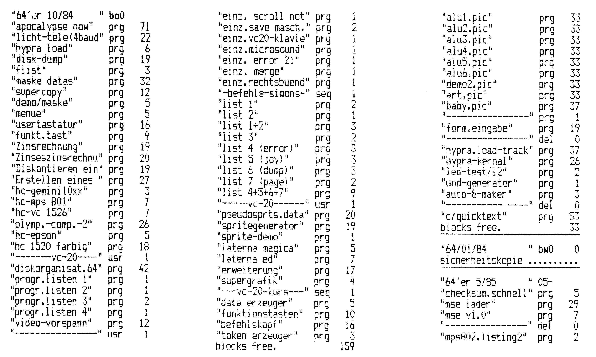

Tips und Tricks zu Vizawrite 64 (Teil 4)
Die Resonanz auf unsere Software-Hilfe ist sehr erfreulich. Eine Vielzahl von Tips, Anwendungen und Programmen dazu haben uns erreicht. In dieser Folge geht’s in eine neue Runde unserer Software-Hilfe.
Mit Vizawrite 64 kann man ganz hervorragend Listen seiner Disketten herstellen.dem Befehl »CBM undM« schaltet man in den »Merge«-Modus und kann das Directory mit dem »$«-Zeichen einlesen. Nun läßt sich der Directory-Text beliebig bearbeiten und mit Kommentaren versehen.
Auf diese Weise kann man mehrere Directorys aneinanderhängen und als Textdatei speichern. Wenn sich auf einer Diskette etwas ändert, wird einfach das gesamte geänderte Directory mit Vizawrite 64 in das bestehende Verzeichnis geladen. Dann übernimmt man die entsprechenden Kommentare und löscht den alten Inhalt mit der Taste F7. Auf diese Weise steht immer der aktuelle Inhalt aller Disketten zur Verfügung. Zum Ausdrucken empfiehlt es sich, im Druckermenü den »Pitch Setting«-Wert auf »3« (komprimierte Schrift) und den Zeilenabstand auf 1/8 Zoll einzustellen. Als Startspalte wird »0, 45 oder 80« eingegeben. Das bewirkt, daß man ein A4-Blatt 3spaltig bedrucken kann. Der Ausdruck der Programme wird dadurch sehr übersichtlich und man muß nicht durch viele Seiten blättern um ein Programm zu finden (Bild 1).
Dieser Tip stammt von Horst Kneisel.

Umlaute auf dem MPS 801
Hendrik Hartje hat eine Anpassung entwickelt, mit der die Druckroutine für den MPS 801 aus der Ausgabe 2/86, Seite 75, auch mit Vizawrite 64 Umlaute auf dem MPS 801 druckt. Dazu geht man wie folgt vor:
1.) Die Druckroutine mit
»LOAD"Druckroutine",8«
laden und starten.
2.) Bei der Bereichswahl »5« für Basic-Ende angeben.
3.) Auf die Frage » Zeichen ändern?« ein »J« für Ja eingeben.
4.) Für die Umlaute müssen nun die folgenden Daten angegeben werden:
ä = 123
Ä = 91
ö = 124
Ö = 92
ü = 125
Ü = 93
ß = 126
5.) Das vom Programm vorgegebene NEW und PRINT FRE(0) mit RETURN übernehmen.
6.) OPEN 4,4,7:PRINT#4: CLOSE 4
eingeben um den Drucker auf die neue Schrift einzustellen.
7.) Das Programm Vizawrite 64 normal laden und den gewünschten Text mit Umlauten tippen. Zur Erleichterung kann man sich kleine Aufkleber auf die Tasten kleben, um die Umgewöhnung auf die Umlaute zu erleichtern: Auf dem Semikolon das »Ä«, auf dem Doppelpunkt das »Ö«, aufden Klammeraffen das »Ü« und auf das Pfund-Zeichen das »ß«.
8.) Zum Drucken im Druckermenü als Druckertyp »y« angeben und den Druckvorgang mit Taste F1 starten.
Achtung! Durch die neue Schrift passen weniger Zeilen auf ein Blatt (etwa 55). Dies muß unbedingt beachtet werden, da der Ausdruck sonst über die Perforation reichen würde.
Jetzt können Sie Ihren ersten MPS-gedruckten Text mit Umlauten und Unterlängen bewundern.
(Hendrik Hartje)Ganz besonders fleißig war Rolf Kitzing, denn er hat uns gleich vier gute Tips eingeschickt:
Bestimmung der ersten Seitenzahl
Vizawrite 64 verfügt über keinen Befehl, mit dem man für den Druck eines Textes willkürlich die Seitenzahl bestimmen kann, mit der die Seitennumerierung beginnen soll. Eine solche Möglichkeit wäre zum Beispiel für den Ausdruck längerer Texte mit automatischer Seitennumerierung, die sich über mehr als eine Diskette erstrecken, von Nutzen. Wenn die Textkette der ersten Diskette sich zum Beispiel von Seite 1 bis Seite 20 erstreckt, dann müßte die Numerierung der zweiten Textkette bei Seite 21 beginnen. Vizawrite 64 würde aber erneut bei »1« zu zählen beginnen. Normalerweise müßten also alle Seitenzahlen von Hand eingefügt werden, wenn dieses Problem vermieden werden soll. Es gibt jedoch eine, wenn auch etwas umständliche Möglichkeit, dennoch eine Numerierung zu veranlassen, die nicht automatisch bei »1«, sondern zum Beispiel bei »21« beginnt. Im Beispielfall brauchen vor der ersten Seite des Textes nur zwanzig Seitenendezeichen (CTRL p) eingegeben werden. Dadurch wird die eigentliche Seite 1 des Textes zur Seite 21 von X Seiten. Wenn dann auf der Druckerauswahlseite unter »Start Page« »21« und unter »End Page« »999« eingegeben wird, beginnt Vizawrite 64 die Numerierung der Seiten der zweiten Textkette mit »21«. Aufdiese Weise kann jede gewünschte Anfangsseitenzahl gewählt werden.
Unter »Global/Fill« darf bei diesem Verfahren allerdings kein »f« stehen, weil Vizawrite 64 dann keinerlei Aktion veranlaßt.
Für kontinuierliche Mehrfachdrucke stellt Vizawrite 64 leider keine Funktion bereit. Trotzdem kann man mit einem Druckvorgang zwei oder mehr Exemplare eines Textes auf dem Umweg über die »Merge«-Funktion erhalten.
Wenn es sich um einen einseitigen Text handelt, gibt man dazu in die Arbeitsseite so viele Einfügezeichen (CTRL m) ein, wie Ausdrucke gewünscht werden. Hinter jedes dieser Einfügezeichen, ausgenommen dem letzten, wird ein Nichteinfügezeichen (CTRL d) gesetzt. Falls zum Beispiel drei gedruckte Exemplare des bearbeiteten Textes gewünscht werden, wäre folgendes einzugeben:
Mehrfachdrucke
CTRL m/CTRL d/CTRL m/ CTRL d/CTRL m/RETURN
In den Haupttext wird an den Anfang der ersten Zeile ebenfalls ein Einfügezeichen gesetzt.
In die Druckauswahlseite wird dann unter »Global/Fill« ein »f« eingegeben und wenn nun der Druckbefehl erteilt wird, produziert der Drucker genau so viele Exemplare des Textes nacheinander ohne Unterbrechung wie Einfügezeichen in der Arbeitsseite stehen und ohne daß der Druckbefehl erneut erteilt werden muß.
Bei diesem Verfahren ist nur darauf zu achten, daß die automatische Seitennumerierung nicht benutzt wird, da Vizawrite 64 dann zum Beispiel die Mehrfachdrucke eines einseitigen Textes nicht, wie es richtig wäre, alle mit »1« numeriert, sondern das zweite Exemplar mit »2«, das dritte mit »3« und so weiter. Der mehrfache fortlaufende Druck eines aus nur einer Seite bestehenden Textes ist, wie man sieht, verhältnismäßig einfach. Etwas komplizierter wird es, wenn man auch mehrseitige Texte in einem Zug in mehreren Exemplaren ausdrucken will. Möglich ist aber auch das und zwar kann man dabei je nach Geschmack auf dreierlei Art und Weise vorgehen.
Falls man auch hier davon ausgeht, daß drei gedruckte Exemplare des mehrseitigen Textes gewünscht werden, dann müßte das oben beschriebene Verfahren für einseitige Texte ja eigentlich zum gleichen Resultat führen. Aber leider hat Vizawrite 64 die Eigenheit, beim mehrfachen Druck mehrseitiger Texte auf diese Weise vomjeweils letzen Ausdruck, hier also vom dritten, nur die erste Seite zu produzieren und alle folgenden Seiten unter den Tisch fallen zu lassen. Aber auch gegen diesen Tick des Programms, der sich übrigens auch bei der Erstellung von Serienbriefen bemerkbar macht, ist ein Kraut gewachsen. Entweder gibt man in die Arbeitsseite ein Einfügezeichen mehr ein als man Ausdrucke benötigt, dann bekommt man drei vollständige Texte plus noch einmal die unerwünschte erste Seite des Textes zum Wegwerfen. Wer diese Papierverschwendung unerfreulich findet, der kann sie durch Anwendung der dritten, etwas umständlicheren Methode aus der Welt schaffen. Dieses dritte Verfahren veranlaßt den Drucker, ganz genau nur die gewünschte Anzahl vollständig gedruckter Texte auszugeben.
Um dies zu erreichen, werden in die Arbeitsseite nacheinander so viele Einfügezeichen eingegeben, wie der zu druckende Text Seiten hat. Nehmen wir an, unser Text hat drei Seiten und soll zweimal gedruckt werden. Das erfordert also erstmal die Eingabe von drei Einfügezeichen nacheinander. Gleich danach wird ein Nichteinfügezeichen gefolgt von erneuten drei Einfügezeichen sowie einem abschließenden »RETURN« angefügt.
Die Befehlsfolge lautet also genau wie folgt:
CTRL m/CTRL m/CTRL m/CTRL d/CTRL m/ CTRL m/CTRL m/»RETURN«.
Jedes der einzelnen Einfügezeichen in einer der durch Nichteinfügezeichen voneinander getrennten Zeichenreihen steht hierbei für eine Seite des mehrseitigen Textes. Besteht der Text, von dem mehrere Ausdrucke gewünscht werden, aus vier oder fünf Seiten, so müßten entsprechend der Seitenzahl vier oder fünf Einfügezeichen in eine Reihe gesetzt werden. Jede der durch Nichteinfügezeichen voneinander getrennten Reihen von Einfügezeichen steht für einen Druck. Werden also nicht zwei, sondern drei oder vier Drucke gewünscht, so müßte die Befehlsreihe nur entsprechend verlängert werden. Um nach diesen Vorbereitungen endlich die erwünschte Wirkung zu erreichen, muß nur noch an den Anfang der ersten Zeile einer jeden Seite des betreffenden Textes ein Einfügezeichen und nach »Global/Fill« in der Druckerauswahl ein »f« gesetzt werden. Setzt man die Einfügezeichen beim Schreiben des Textes gleich mit ein, weil möglicherweise mehrere Ausdrucke benötigt werden, ist der Arbeitsaufwand dafür gering. Sollte am Ende dann doch nur ein Ausdruck erforderlich sein, kann man die Einfügezeichen unbesorgt für späteren Bedarf stehen lassen, weil man den ursprünglich geplanten Mehrfachdruck durch einfaches Auslassen des »f« in der Druckerauswahl außer Kraft setzt.
Ein letzter Hinweis zu diesem Thema: Bei der Verwendung von Hochschrift oder Tiefschrift in einem auf diese Weise mehrfach gedruckten Text ist es besser, diese Schriftarten nicht mit den Vizawrite 64-Formatzeichen, sondern besser mit dem Drucker-Steuerbefehl über die Formatzeile einzustellen, weil Vizawrite 64 nach dem Ausdruck des ersten Exemplars unter gewissen Umständen die Einstellung der Hoch- oder Tiefschrift nicht beachtet.
Fettdruck mit Epson
Bei der Verwendung eines Epson-Druckers mit NLQ-Schrift stellt sich heraus, daß der bei Vizawrite 64 verfügbare Fettdruckbefehl (CTRL e) eigentlich ein Befehl ist, der Doppeldruck und nicht Fettdruck ein- und ausschaltet. Man merkt dies bei der genauen Beobachtung des Normalschrift-Druckvorgangs oder spätestens, wenn man sich wundert, warum der Befehl beim Druck von NLQ-Schrift keine Wirkung zeigt. Letzteres liegt natürlich daran, daß die NLQ-Schrift keinen Doppeldruck, wohl aber Fettdruck zuläßt. Um nun auch bei der NLQ-Schrift den gewünschen Effekt zu erzielen, bedient man sich am besten der Steuerbefehle, indem man sich mit »E« und »F« in der Formatzeile die Einschaltung und Ausschaltung des Fettdrucks programmiert.
Worttrennung am Ende der Zeile
Bei Druck im Blocksatz vermeidet man gern allzu lange Lücken in einer Zeile, die dadurch entstehen, daß das erste Wort der folgenden Zeile zu lang ist, um noch ganz ans Ende der Vorzeile zu passen. Es wäre also eine entsprechende Trennung dieses Wortes angezeigt, so daß wenigstens ein Teil des Wortes noch in die Vorzeile passen und damit die bestehende Lücke entsprechend verkleinert würde.
Nun verfügt Vizawrite 64 aber leider nicht über die angenehme Funktion des bedingten Trennungsstriches. Man muß sich also anders helfen und kann das auch eigentlich ziemlich gut, indem man wie folgt verfährt:
Nachdem der eingegebene Text in jeder anderen Hinsicht für richtig befunden worden ist, wird der Cursor auf den rechten Zeilenrand gestellt und der rechte Rand des Textes von oben nach unten auf bestehende Unterschiede in der Zeilenlänge überprüft. Findet man eine Zeile, die besonders kurz geraten ist, kann man daraus schließen, daß sich hier beim Ausdruck im Blocksatz besonders auffallende Zwischenräume ergeben werden. Wenn nun das erste Wort der folgenden Zeile trennbar ist, kann man diese Zwischenräume durch Herüberziehen des Wortanfangs an das Ende der Vorzeile unter Umständen bedeutend verringern oder gar ganz verschwinden lassen.
Um diese Wirkung zu erzielen, verfährt man wie folgt: Der Cursor muß hinter der kurzen Zeile stehen. Dann wird SHIFT und RETURN gedrückt und der Cursor damit an den Anfang der folgenden Zeile bewegt. Von dort setzt man ihn dann mit der Cursor-Steuertaste auf den Buchstaben des ersten Wortes, der auf die Silbe oder die Silben folgt, die noch in der vorhergehenden Seite Platz finden, das heißt, also auf den ersten Buchstaben des Restwortes, das auf der folgenden Zeile verbleiben soll. Durch Drücken von SHIFT und INST/DEL wird der Wortteil, der vor dem Cursor steht, nun vom Rest des Wortes getrennt und automatisch ans Ende der vorhergehenden Zeile übertragen. Der Cursor springt mit und es muß jetzt nur noch ein Trennungsstrich an das Ende des versetzten Wortteils gefügt werden. Das Restwort in der folgenden Zeile rückt automatisch an den linken Rand. Da der hier verwendete Trennungsstrich aber leider wie gesagt kein bedingter Trennungstrich ist, muß man nach dem Abschluß dieser Textjustierung vorsichtig mit nachträglichen. Änderungen sein. Da Vizawrite 64 bekanntlich den Text dann sofort umformatiert, kann es natürlich sein, daß dadurch ein getrenntes Wort vom Zeilenende in die Mitte einer Zeile rutscht und dann beim Ausdruck mit einem etwas unmotivierten Trennungsstrich erscheint. Nach vorgenommenen nachträglichen Textänderungen sollte man also vorsichtshalber immer den unformatierten Text vor dem Druck auf solche Erscheinungen überprüfen.
Tips fürs Drucken
In der Formatzeile können viele Steuerzeichen für den Drucker abgekürzt werden, indem ihr ESC-Buchstabe geschrieben wird. Der Grund ist einfach, denn es werden von Vizawrite 64 nur die Zeichen die kleiner als 128 sind unbehandelt weitergegeben, die ASCII-Zeichen über 128 werden folgendermaßen verarbeitet: ASCII-Wert — 128 = zu druckendes Zeichen oder einfach »AND $8F«, davor wird der Code 27 (der Wert, der viele Steuerzeichen einleitet, heißt ESC und hat den Wert 27) gesetzt. Dies bewirkt, daß zum Beispiel der Code zum Ausschalten des Potenzmodus (27,84) durch ein »CTRL 0 = T« in der Formatzeile abgekürzt werden kann. Wichtig ist, daß ein großes »T« dort steht — im Commodore Bildschirmcode ist das der Wert 128 + 84 = 212.
In vielen Fällen ist das ganz praktisch, es hat aber Nachteile bei der Verwendung von etwas »exotischeren« Druckern, die Steuercodes mit Werten über 128 verwenden, so zum Beispiel verschiedene Typenraddrucker. Abhilfe: Eine Schnittstelle schreiben, die diese umgewandelten Zeichen erkennt und zurückverwandelt!
(Andreas Gebbert)Neues von Vizaspell
In der letzten Folge stellten wir die Frage nach dem Rechtschreibprogramm Vizaspell, das ja von Vizawrite 64 aus aufgerufen werden kann. Dazu konnten wir in Erfahrung bringen, daß man dieses Programm zum Preis von 129 Mark bei Microtron in der Schweiz bekommen kann. Leider ist dies nur die englische Version, die bei Verwendung von deutschen Umlauten abstürzt und auch nur über einen englischen Wortschatz verfügt. Es besteht allerdings die Möglichkeit, beliebige Worte zusätzlich einzuprogrammieren, also auch deutsche Worte (ohne Umlaute). Trotzdem, wer mehr über Vizaspell weiß, sollte sich bitte melden.
(aw)Vizawrite 64 und Privileg Electronic 3000
Die Privileg Electronic 3000 mit »Multi Board Interface« hat leider die unangenehme Eigenschaft, kleine und große Buchstaben miteinander zu vertauschen. Das kann man aber abstellen. Durch einmaliges Senden des CHR$(145) schaltet der Drucker um und schreibt von nun an ganz korrekt. Diesen Befehl muß man auf jeder Seite neu eingeben.
Vorgehensweise: In der Formatzeile die CTRL-Taste drücken, dann eine Zahl von 0 bis 9, danach»= 145« eingeben. In der ersten Textzeile den neuen Formatbefehl als erstes angeben. Beim Ausdruck hat sich das »a« für den Druckertyp am besten bewährt.
Einen beliebigen Text kann man mit dem CHR$(95) in der Formatzeile so oft wie erforderlich erreichen.
(Karl-Heinz Nöthel)Aussichten
In der nächsten Folge gibt es Programme, mit denen das Arbeiten mit Vizawrite 64 noch interessanter wird. Das erste Programm liest beliebige Vizawrite 64-Dateien ein und gibt sie entweder auf dem Bildschirm oder in eine sequentielle Datei aus. Mit dem zweiten Programm erhalten Sie einen Zeichensatz-Editor, der es ermöglicht, beliebige Zeichen zu definieren und mit Vizawrite zu verwenden. Seien es nun griechische oder wissenschaftliche Zeichen — der Fantasie sind keine Grenzen gesetzt.
Die übernächste Folge wird neben vielen weiteren Tips noch ein ganz besonderes Programm enthalten. Mit diesem Programm können Sie mit Vizawrite 64 Assemblerfiles erstellen und anschließend assemblieren. Dabei stehen Ihnen alle Vorteile eines so leistungsfähigen Texteditors wie Vizawrite 64 zur Verfügung.
(aw)In eigener Sache.
Immer wieder erreichen mich Briefe mit der Bitte, aus dem Software-Corner doch eine Serie zu machen und auch andere Programme wie Superbase, Startexter, Vizastar 64, Datamat, Multiplan und Textomat zu behandeln. Nun, diesen Wunsch will ich gerne erfüllen. Dabei möchte ich, nachdem in einer oder zwei Folgen auf die generelle Bedienung des Programmes eingegangen wurde, Ihre Tips, Tricks, Erweiterungen und Anwendungen aber auch Fragen in lockerer Folge veröffentlichen. Wer sich beteiligen möchte, und auch den anderen Lesern seine Erfahrungen zugute kommen lassen will, schreibt unter dem Stichwort »Software Corner« an den Verlag Markt & Technik AG, Arnd Wängler, Redaktion 64’er, Hans-Pinsel-Str. 2, 8013 Haar.